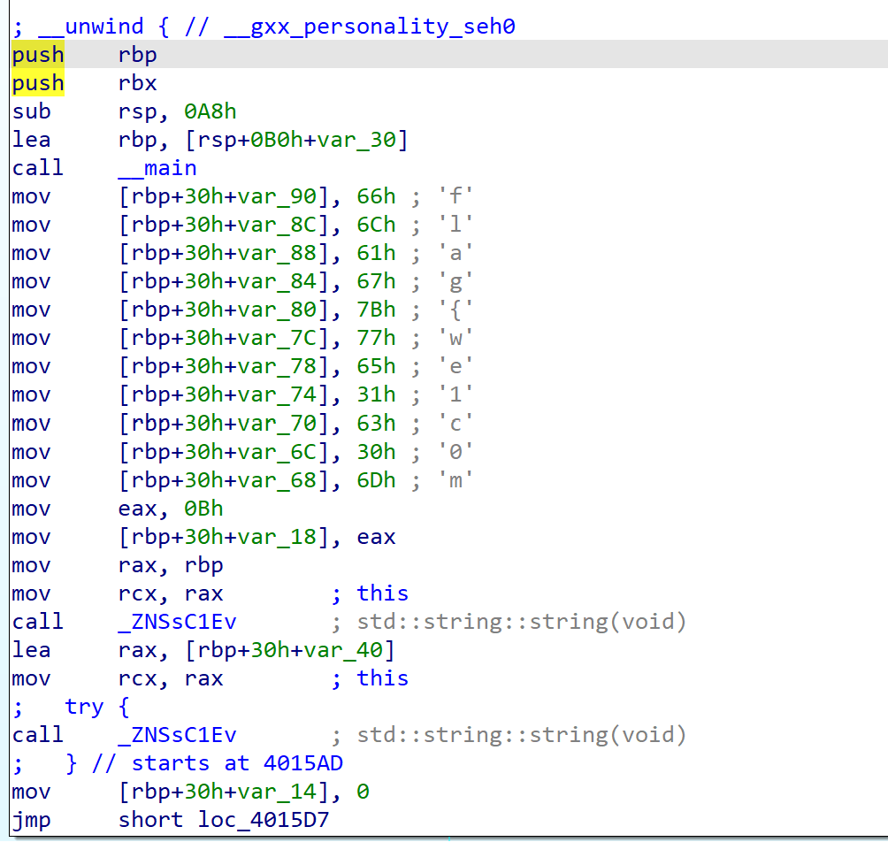
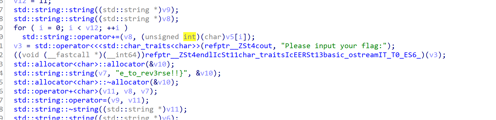
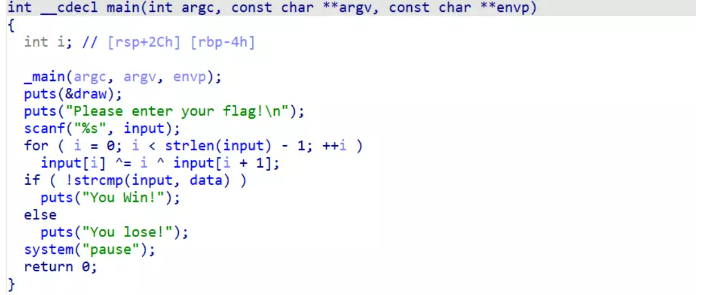
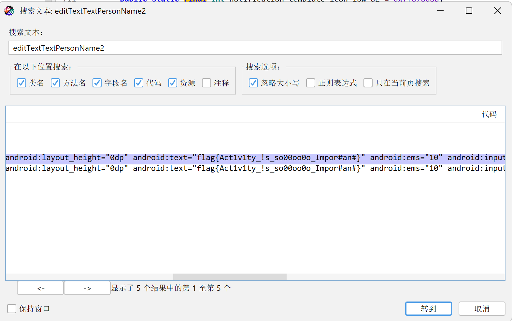
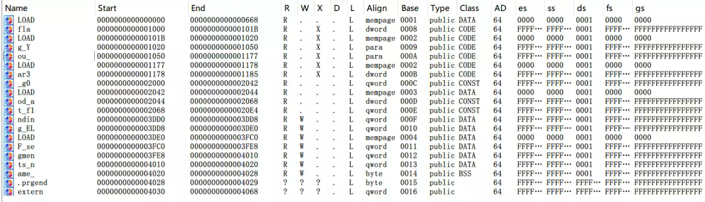

# Reverse
# easy_RE
打开 IDA 即可看到前半段 flag，F5 反汇编或者 tap 后，看到后半段 flag:


# ELF
进入主函数，发现 flag 先进入了 encode 函数进行加密，然后再进行 base64 加密。
int __cdecl main(int argc, const char **argv, const char **envp)
{
unsigned int v3; // edx
char *s1; // [rsp+0h] [rbp-20h]
char *v6; // [rsp+8h] [rbp-18h]
char *s; // [rsp+10h] [rbp-10h]
s = (char *)malloc(0x64uLL);
printf("Input flag: ");
fgets(s, 100, stdin);
s[strcspn(s, "\n")] = 0;
v6 = encode(s);
v3 = strlen(v6);
s1 = (char *)base64_encode(v6, v3);
if ( !strcmp(s1, "VlxRV2t0II8kX2WPJ15fZ49nWFEnj3V8do8hYy9t") )
puts("Correct");
else
puts("Wrong");
free(v6);
free(s1);
free(s);
return 0;
}
_BYTE *__fastcall encode(const char *a1) | |
{ | |
size_t v1; // rax | |
int v2; // eax | |
_BYTE *v4; // [rsp+20h] [rbp-20h] | |
int i; // [rsp+28h] [rbp-18h] | |
int v6; // [rsp+2Ch] [rbp-14h] | |
v1 = strlen(a1); | |
v4 = malloc(2 * v1 + 1); | |
v6 = 0; | |
for ( i = 0; i < strlen(a1); ++i ) | |
{ | |
v2 = v6++; | |
v4[v2] = (a1[i] ^ 0x20) + 16; | |
} | |
v4[v6] = 0; | |
return v4; | |
} |
了解加密逻辑，编写 EXP
import string | |
import base64 | |
str = "VlxRV2t0II8kX2WPJ15fZ49nWFEnj3V8do8hYy9t" | |
s = '' | |
a= base64.b64decode(str) | |
print(a) | |
print(base64.b64encode(a)) | |
for i in base64.b64decode(str): | |
for j in string.printable: | |
if (ord(j) ^ ord(' ')) == i-16: | |
s += j | |
break | |
print(s) |
# EzPE
先修复 MZ 头，将 WZ 改为 MZ，然后再去修复 E_lfanew 的偏移，根据 PE 头的偏移，可以推断是其值为 0x80。
关于 PE 头，可以参考这篇文章：
PE 文件逆向基础知识

异或算法，编写 EXP
data = [0x0A, 0x0C, 0x04, 0x1F, 0x26, 0x6C, 0x43, 0x2D, 0x3C, 0x0C, 0x54, 0x4C, 0x24, 0x25, 0x11, 0x06, 0x05, 0x3A, 0x7C, 0x51, 0x38, 0x1A, 0x03, 0x0D, 0x01, 0x36, 0x1F, 0x12, 0x26, 0x04, 0x68, 0x5D, 0x3F, 0x2D, 0x37, 0x2A, 0x7D] | |
# 逆向异或操作 | |
for i in range(len(data) - 2, -1, -1): | |
data[i] ^= i ^ data[i + 1] | |
# 打印结果 | |
result = ''.join([chr(x) for x in data]) | |
print(result) |
# Lazy_Activity
反编译后找到 flagactivty, 阅读代码，可以看到 flag 是
editText.getText().toString() | |
final EditText editText = (EditText) findViewById(R.id.editTextTextPersonName2); |
全局搜索 editTextTextPersonName2 即可

或者还有一种方法是结合模拟器来运行 FLag 类，而获得 Flag 的条件就是点击 10000 次，具体可以参考这篇文章：
艾克体悟题
在 jeb 的设置里开启 ADB 调试，启动指定的 Activity:
adb shell am start -n com.yusuzhan.xxx/.MainActivity | |
adb shell 进入shell | |
su 获得root权限 | |
启动指定控件，对应上图的路径 | |
am start -n com.droidlearn.activity_travel/.FlagActivity |
启动成功模拟器就会弹出，点击 10000 次得 flag:
import pyautogui as pd | |
import threading | |
import time | |
time.sleep(3) | |
# 创建一个标志变量，用于控制程序是否继续运行 | |
running = True | |
# 创建一个函数，用于运行点击操作的线程 | |
def click_thread(): | |
global running | |
try: | |
pd.click(clicks=10000, interval=0.0001) | |
except Exception as e: | |
print(f"An error occurred: {str(e)}") | |
finally: | |
# 点击操作完成后，将标志变量设置为 False，通知主线程终止程序 | |
running = False | |
# 创建一个新的线程来运行点击操作 | |
click_thread = threading.Thread(target=click_thread) | |
click_thread.start() | |
# 主线程等待 10 秒后终止程序 | |
time.sleep(10) | |
running = False # 设置标志变量为 False 以终止点击操作线程 | |
# 等待点击操作线程结束 | |
click_thread.join() |
还有一个方法就是用 hook access$000 函数让该函数直接返回 10000，但是要在模拟器上面安装和自己电脑 fiida 版本对应的 frida-server。
# AndroXor
反编译找到 MainActivty，阅读代码后可以知道是异或操作
public class androidxor { | |
static String str2 = "happyx3"; | |
static char[] cArr = {14, '\r', 17, 23, 2, 'K', 'I', '7', ' ', 30, 20, 'I', '\n', 2, '\f', '>', '(', '@', 11, '\'', 'K', 'Y', 25, 'A', '\r'}; | |
public static void main(String[] args) { | |
int i = 0; | |
StringBuilder sb = new StringBuilder(); | |
for(i = 0; i < 25; i++) { | |
char charAt = (char) ((int) cArr[i] ^ str2.charAt(i % str2.length())); | |
sb.append(charAt); | |
} | |
System.out.println(sb); | |
} | |
} |
编写解密脚本
import string | |
str2 = "happyx3" | |
cArr = [14, ord('\r'), 17, 23, 2, ord('K'), ord('I'), ord('7'), ord(' '), 30, 20, ord('I'), ord('\n'), 2, ord('\f'), ord('>'), ord('('), ord('@'), 11, ord("'"), ord('K'), ord('Y'), 25, ord('A'), ord('\r')] | |
print(cArr) | |
# 初始化一个空字符串来存储计算结果 | |
str = "" | |
# 使用循环来逐字符还原 str | |
for i in range(25): | |
for j in string.printable: | |
charAt = ord(j) ^ ord(str2[i % len(str2)]) | |
if charAt == cArr[i]: | |
str += j | |
break | |
print(str) |
# endian
if ( *(_DWORD *)v5 != (array[i] ^ 0x12345678) ) |
把 array 的数据提取出来 异或 0x12345678 即可
# 定义整数数组 | |
array = [0x75553A1E, 0x7B583A03, 0x4D58220C, 0x7B50383D, 0x736B3819,0] | |
# 初始化 v5 的值 | |
v5_value = bytearray() | |
# 模拟循环比较的逻辑 | |
for i in range(5): | |
result = array[i] ^ 0x12345678 | |
print(hex(result)) | |
v5_value += result.to_bytes(4,byteorder='little') | |
print(v5_value) |
# 壳
壳是我们逆向工程中一大方向，而我们 CTF 一般遇到的都是压缩壳（当然少数比赛还有加密壳或自写壳等），掌握好压缩壳的基本识别与动态脱壳即可掌握好该考点
我们下载 DIE 或 exeinfo 用来查壳，可以发现是 UPX4.02，那么我们只需要用高版本 UPX 工具，即可脱壳（上述工具推荐在 52 破解或是 github 上搜索自写）
脱壳后拖进 IDA64，可以发现对我们的 input 唯一的操作就是进行 +1，那我们提取密文直接 -1 即可
enc = [ 0x67, 0x6D, 0x62, 0x68, 0x7C, 0x44, 0x31, 0x6F, 0x68, 0x73, 0x62, 0x75, 0x76, 0x32, 0x62, 0x75, 0x32, 0x31, 0x6F, 0x74, 0x31, 0x6F, 0x51, 0x62, 0x33, 0x33, 0x32, 0x6F, 0x68, 0x55, 0x69, 0x66, 0x47, 0x32, 0x73, 0x74, 0x75, 0x51, 0x5B, 0x48, 0x42, 0x4D, 0x42, 0x59, 0x5A, 0x32, 0x66, 0x77, 0x66, 0x32, 0x7E] | |
for i in range(len(enc)): | |
print(chr(enc[i] - 1), end = "") |
# Shift+f7
本题有两种解法，首先是可以通过题目名称来解，将文件拖入 IDA，然后按下 shift+f7 即可看到 flag 被拆分放在各个段中，由于 IDA 的问题可能无法显示大括号，不过细心观察应该是很容易能看出来 flag 的。

第二种解法可以使用 python 的 lief 库来读取，可以看到 flag 是从低到高的顺序保存的，通过 lief 库可以读出相应的名字。
import lief | |
\# 读取二进制文件 | |
binary = lief.parse("shift_f7") | |
\# 过滤掉低于0x1000地址的段和.dynamic段 | |
filtered_sections = [section for section in binary.sections if section.virtual_address >= 0x1000 and section.name != '.dynamic'] | |
\# 按地址从低到高排序 | |
sorted_sections = sorted(filtered_sections, key=lambda section: section.virtual_address) | |
\# 输出排序后的段名和地址 | |
for section in sorted_sections: | |
print(section.name,end='') | |
\#flag{You_ar3_g0od_at_f1nding_ELF_segments_name} |